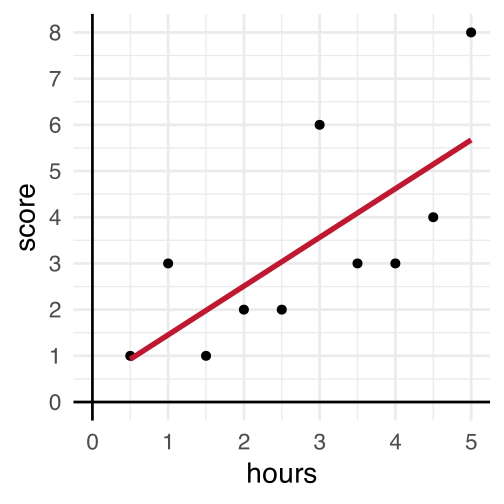
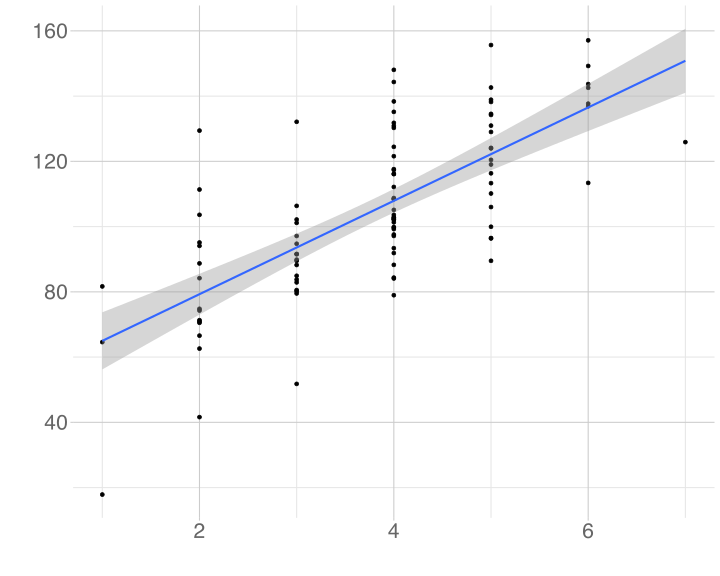
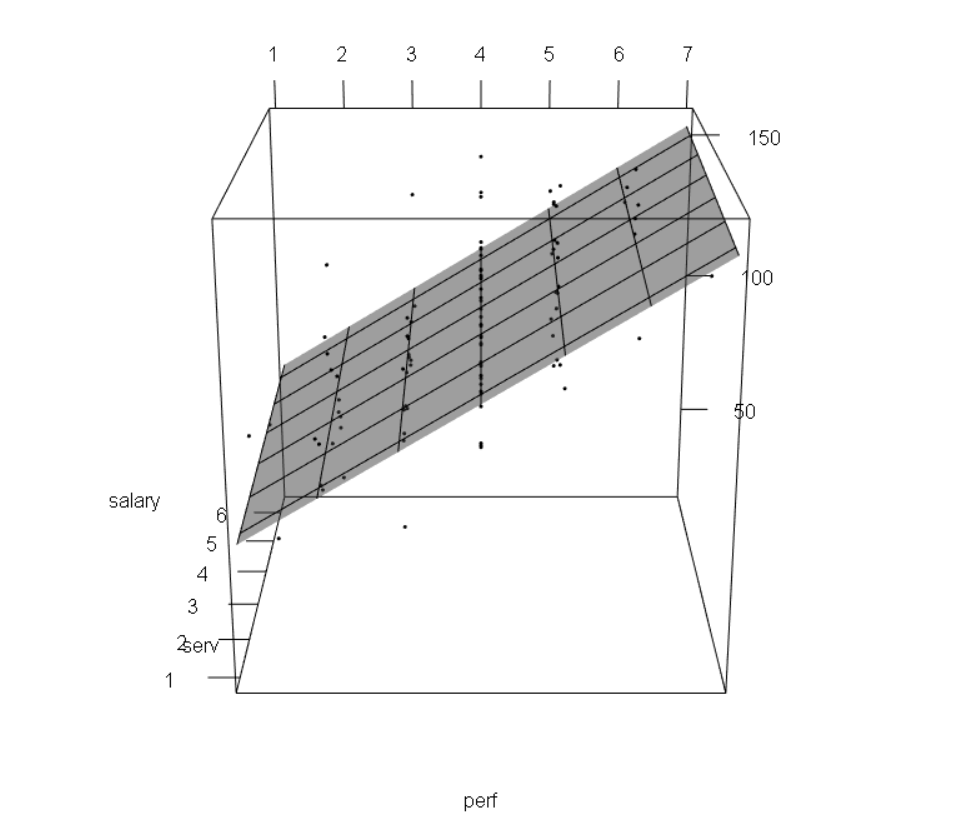

lm(DV ~ IV, data = datasetName)Linear Model: Fundamentals
Data Analysis for Psychology in R 2
Dr. Patrick Sturt (Patrick.Sturt@ed.ac.uk)
Department of Psychology
University of Edinburgh
2026–2027
Course Overview
| Introduction to Linear Models | Intro to Linear Regression |
| Interpreting Linear Models | |
| Testing Individual Predictors | |
| Model Testing & Comparison | |
| Linear Model Analysis | |
| Analysing Experimental Studies | Categorical Predictors & Dummy Coding |
| Effects Coding & Coding Specific Contrasts | |
| Assumptions & Diagnostics | |
| Bootstrapping | |
| Categorical Predictor Analysis |
| Interactions | Interactions I |
| Interactions II | |
| Interactions III | |
| Analysing Experiments | |
| Interaction Analysis | |
| Advanced Topics | Power Analysis |
| Binary Logistic Regression I | |
| Binary Logistic Regression II | |
| Logistic Regression Analysis | |
| Exam Prep and Course Q&A |
This Week’s Learning Objectives
Be able to interpret the coefficients from a simple linear model
Understand how and why we standardise coefficients and how this impacts interpretation
Understand how these interpretations change when we add more predictors
Part 1: Recap & Coefficient Interpretation
Linear Model
- Last week we introduced the linear model:
\[y_i = \beta_0 + \beta_1 x_{i} + \epsilon_i\]
- Where:
- \(y_i\) is our measured outcome variable
- \(x_i\) is our measured predictor variable
- \(\beta_0\) is the model intercept
- \(\beta_1\) is the model slope
- \(\epsilon_i\) is the residual error (difference between the model predicted and the observed value of \(y\))
- We spoke about calculating by hand, and also the key concept of residuals
lm in R
- You also saw the basic structure of the
lm()function:
- And we ran our first model:
Call:
lm(formula = score ~ hours, data = test)
Coefficients:
(Intercept) hours
0.40 1.05 - This week, we are going to focus on the interpretation of our model, and how we extend it to include more predictors
lm in R
Call:
lm(formula = score ~ hours, data = test)
Residuals:
Min 1Q Median 3Q Max
-1.618 -1.077 -0.746 1.177 2.436
Coefficients:
Estimate Std. Error t value Pr(>|t|)
(Intercept) 0.400 1.111 0.36 0.728
hours 1.055 0.358 2.94 0.019 *
---
Signif. codes: 0 '***' 0.001 '**' 0.01 '*' 0.05 '.' 0.1 ' ' 1
Residual standard error: 1.63 on 8 degrees of freedom
Multiple R-squared: 0.52, Adjusted R-squared: 0.46
F-statistic: 8.67 on 1 and 8 DF, p-value: 0.0186Interpretation
Intercept is the expected value of Y when X is 0
- X = 0 is a student who does not study
- As the intercept is 0.4000, we conclude that a student who does not study would be expected to score 0.40 on the test
- X = 0 is a student who does not study
Slope is the number of units by which Y increases, on average, for a unit increase in X
- Unit of Y = 1 point on the test
- Unit of X = 1 hour of study
- As the slope for hours is 1.0545, we conclude that for every hour of study, test score increases on average by 1.055 points
- Unit of Y = 1 point on the test

Coefficients:
Estimate Std. Error t value Pr(>|t|)
(Intercept) 0.400 1.111 0.36 0.728
hours 1.055 0.358 2.94 0.019 *Note of Caution on Intercepts
In our example, 0 has a meaning
- It is a student who has studied for 0 hours
But it is not always the case that 0 is meaningful
Suppose our predictor variable was not hours of study, but age
Imagine the model has age as a predictor variable instead of the number of hours studied. How would we interpret an intercept of 0.4?
- This is a general lesson about interpreting statistical tests:
- The interpretation is always in the context of the constructs and how we have measured them
Practice with Scales of Measurement (1)
Imagine a model looking at the association between an employee’s salary and their duration of employment
- \(x\) = unit is 1 year
- \(y\) = unit is £1000
- \(\beta_1\) = 0.4
- How do we interpret:
- \(\beta_0\)?
- \(\beta_1\)?
- \(\beta_0\)?
For reference/hint:
\(\beta_0\) = Intercept is the expected value of Y when X is 0
\(\beta_1\) = Slope is the number of units by which Y increases, on average, for a unit increase in X
Practice with Scales of Measurement (2)
Imagine a model looking at the association between the length of cats’ tails and their weight
- \(x\) = unit is 1kg
- \(y\) = unit is 1cm
- \(\beta_1\) = -3.2
- How do we interpret:
- \(\beta_0\)?
- \(\beta_1\)?
- \(\beta_0\)?
For reference/hint:
\(\beta_0\) = Intercept is the expected value of Y when X is 0
\(\beta_1\) = Slope is the number of units by which Y increases, on average, for a unit increase in X
Practice with Scales of Measurement (3)
Imagine a model looking at the association between healthy eating habits and personality
- \(x\) = unit is 1 increment on a Likert scale ranging from 1 to 5 measuring conscientiousness
- \(y\) = unit is 1 increment on a healthy eating scale
- \(\beta_1\) = 0.25
- How do we interpret:
- \(\beta_0\)?
- \(\beta_1\)?
- \(\beta_0\)?
For reference/hint:
\(\beta_0\) = Intercept is the expected value of Y when X is 0
\(\beta_1\) = Slope is the number of units by which Y increases, on average, for a unit increase in X
Part 2: Standardisation
Unstandardised vs Standardised Coefficients
- So far we have calculated unstandardised \(\hat \beta_1\)
- This means we use the units of the variables we measured
- We interpreted the slope as the change in \(y\) units for a unit change in \(x\) , where the unit is determined by how we have measured our variables
- This means we use the units of the variables we measured
- However, sometimes these units are not helpful for interpretation
- We can then perform standardisation to aid interpretation
Standardised Units
Why might standard units be useful?
- If the scales of our variables are arbitrary
- Example: A sum score of questionnaire items answered on a Likert scale.
- A unit here would equal moving from e.g. a 2 to 3 on one item
- This is not especially meaningful (and actually has A LOT of associated assumptions)
- If we want to compare the effects of variables on different scales
- If we want to say something like “the effect of \(x_1\) is stronger than the effect of \(x_2\)”, we need a common scale
Option 1: Standardising the Coefficients
- After calculating a \(\hat \beta_1\), it can be standardised by:
\[\hat{\beta_1^*} = \hat \beta_1 \frac{s_x}{s_y}\]
- where:
- \(\hat{\beta_1^*}\) = standardised beta coefficient
- \(\hat \beta_1\) = unstandardised beta coefficient
- \(s_x\) = standard deviation of \(x\)
- \(s_y\) = standard deviation of \(y\)
Implementing in R
- Step 1: Obtain coefficients from the model
Estimate Std. Error t value Pr(>|t|)
(Intercept) 0.40 1.111 0.36 0.7282
hours 1.05 0.358 2.94 0.0186Option 2: Standardising the Variables
Another option is to transform continuous predictor and outcome variables to \(z\)-scores (mean=0, SD=1) prior to fitting the model
If both \(x\) and \(y\) are standardised, our model coefficients (betas) are standardised too
\(z\)-score for \(x\):
\[z_{x_i} = \frac{x_i - \bar{x}}{s_x}\]
- and the \(z\)-score for \(y\):
\[z_{y_i} = \frac{y_i - \bar{y}}{s_y}\]
- That is, we divide the individual deviations from the mean by the standard deviation
Implementing in R
- Step 1: Convert predictor and outcome variables to z-scores (here using the
scalefunction)
center = T- indicates \(x\) should be mean centered
\[z_{x_i} = \frac{\color{#BF1932}{x_i - \bar{x}}}{s_x}\]
scale = T- indicates \(x\) should be divided by \(s_x\)
\[z_{x_i} = \frac{x_i - \bar{x}}{\color{#BF1932}{s_x}}\]
Option 2: Standardising the Variables (Alternative)
Another option is to not transform the variables and save to your dataset, but instead scale the variables directly in the model.
The defaults for
centerandscaleare bothTRUE.
Interpreting Standardised Regression Coefficients
Unstandardised
Call:
lm(formula = score ~ hours, data = test)
Residuals:
Min 1Q Median 3Q Max
-1.618 -1.077 -0.746 1.177 2.436
Coefficients:
Estimate Std. Error t value Pr(>|t|)
(Intercept) 0.400 1.111 0.36 0.728
hours 1.055 0.358 2.94 0.019 *
---
Signif. codes: 0 '***' 0.001 '**' 0.01 '*' 0.05 '.' 0.1 ' ' 1
Residual standard error: 1.63 on 8 degrees of freedom
Multiple R-squared: 0.52, Adjusted R-squared: 0.46
F-statistic: 8.67 on 1 and 8 DF, p-value: 0.0186Standardised
Call:
lm(formula = scale(score) ~ scale(hours), data = test)
Residuals:
Min 1Q Median 3Q Max
-0.731 -0.487 -0.337 0.532 1.101
Coefficients:
Estimate Std. Error t value Pr(>|t|)
(Intercept) 1.17e-17 2.32e-01 0.00 1.000
scale(hours) 7.21e-01 2.45e-01 2.94 0.019 *
---
Signif. codes: 0 '***' 0.001 '**' 0.01 '*' 0.05 '.' 0.1 ' ' 1
Residual standard error: 0.735 on 8 degrees of freedom
Multiple R-squared: 0.52, Adjusted R-squared: 0.46
F-statistic: 8.67 on 1 and 8 DF, p-value: 0.0186\(R^2\) , \(F\) and \(t\)-test and their corresponding \(p\)-values remain the same for the standardised coefficients as for unstandardised coefficients
\(\beta_0\) (intercept) = zero when all variables are standardised:
\[\beta_0 = \bar{y}-\hat \beta_1\bar{x}\]
\[\bar{y} - \hat \beta_1 \bar{x} = 0 - \hat \beta_1 0 = 0\]
Interpreting Standardised Regression Coefficients
The interpretation of the slope coefficient(s) becomes the increase in \(y\) in standard deviation units for every standard deviation increase in \(x\)
So, in our example:
For every standard deviation increase in hours of study, test score increases by 0.72 standard deviations
Which Should we use?
- Unstandardised regression coefficients are often more useful when the variables are on meaningful scales
- E.g. X additional hours of exercise per week adds Y years of healthy life
- Sometimes it’s useful to obtain standardised regression coefficients
- When the scales of variables are arbitrary
- When there is a desire to compare the effects of variables measured on different scales
- Cautions
- Just because you can put regression coefficients on a common metric doesn’t mean they can be meaningfully compared
- The SD is a poor measure of spread for skewed distributions, therefore, be cautious of their use with skewed variables
Relationship to Correlation ( \(r\) )
- If a linear model has a single, continuous predictor, then the standardised slope ( \(\hat \beta_1^*\) ) = correlation coefficient ( \(r\) )
- For example:
Relationship to Correlation ( \(r\) )
- They are equivalent:
- \(r\) is a standardised measure of linear association
- \(\hat \beta_1^*\) is a standardised measure of the linear slope
- Similar idea for linear models with multiple predictors
- Slopes are now equivalent to the part correlation coefficient
Part 3: Multiple Regression
Multiple Predictors
The aim of a linear model is to explain variance in an outcome
In simple linear models, we have a single predictor, but the model can accommodate (in principle) any number of predictors
If we have multiple predictors for an outcome, those predictors may be correlated with each other
A linear model with multiple predictors finds the optimal prediction of the outcome from several predictors, taking into account their redundancy with one another
Uses of Multiple Regression
For prediction: multiple predictors may lead to improved prediction
For theory testing: often our theories suggest that multiple variables together contribute to variation in an outcome
For covariate control: we might want to assess the effect of a specific predictor, controlling for the influence of others
- E.g., effects of personality on health after removing the effects of age and gender
Extending the Regression Model
- Our model for a single predictor:
\[y_i = \beta_0 + \beta_1 \cdot x_{1i} + \epsilon_i\]
- is extended to include additional \(x\)’s:
\[y_i = \beta_0 + \beta_1 \cdot x_{1i} + \beta_2 \cdot x_{2i} + \beta_3 \cdot x_{3i} + \epsilon_i\]
- For each \(x\), we have an additional \(\beta\)
- \(\beta_1\) is the coefficient for the 1st predictor
- \(\beta_2\) for the second etc.
Interpreting Coefficients in Multiple Regression
\[y_i = \beta_0 + \beta_1 \cdot x_{1i} + \beta_2 \cdot x_{2i} + ... + \beta_j \cdot x_{ji} + \epsilon_i\]
Given that we have additional variables, our interpretation of the regression coefficients changes a little
\(\beta_0\) = the predicted value for \(y\) when all \(x\) are 0
Each \(\beta_j\) is now a partial regression coefficient
- It captures the change in \(y\) for a one unit change in \(x\) when all other x’s are held constant
What Does Holding Constant Mean?
Refers to finding the effect of the predictor when the values of the other predictors are fixed
It may also be expressed as the effect of controlling for, or partialling out, or residualising for the other \(x\)’s
With multiple predictors
lmisolates the effects and estimates the unique contributions of predictors
Visualising Models
A linear model with one continuous predictor

A linear model with two continuous predictors

Example: lm with 2 Predictors
Imagine we extend our study of test scores
We sample 150 students taking a multiple choice Biology exam (max score 40)
We give all students a survey at the start of the year measuring their school motivation
- We standardise this variable so the mean is 0, negative numbers are low motivation, and positive numbers high motivation
We then measure the hours they spent studying for the test, and record their scores on the test
Data
lm code
- Multiple predictors are separated by
+in the model specification
Walk-Through of Multiple Regression
- Let’s run our model and illustrate the application of the linear model equation
\[\text{Score}_i = \color{blue}{\beta_0} + \color{blue}{\beta_1} \cdot \color{orange}{\text{Hours}_{i}} + \color{blue}{\beta_2} \cdot \color{orange}{\text{Motivation}_{i}} + \color{blue}{\epsilon_i}\]
values of the linear model (coefficients)
values we provide (inputs)
Walk-Through of Multiple Regression
- Let’s run our model and illustrate the application of the linear model equation
\[\text{Score}_i = \color{blue}{\beta_0} + \color{blue}{\beta_1} \cdot \color{orange}{\text{Hours}_{i}} + \color{blue}{\beta_2} \cdot \color{orange}{\text{Motivation}_{i}} + \epsilon_i\]
Call:
lm(formula = score ~ hours + motivation, data = test_study2)
Residuals:
Min 1Q Median 3Q Max
-12.955 -2.804 -0.285 2.934 13.824
Coefficients:
Estimate Std. Error t value Pr(>|t|)
(Intercept) 6.8668 0.6547 10.49 <2e-16 ***
hours 1.3757 0.0799 17.22 <2e-16 ***
motivation 0.9163 0.3838 2.39 0.018 *
---
Signif. codes: 0 '***' 0.001 '**' 0.01 '*' 0.05 '.' 0.1 ' ' 1
Residual standard error: 4.39 on 147 degrees of freedom
Multiple R-squared: 0.67, Adjusted R-squared: 0.665
F-statistic: 149 on 2 and 147 DF, p-value: <2e-16- \(\color{blue}{\beta_0} = 6.87\)
- \(\color{blue}{\beta_1} = 1.38\)
- \(\color{blue}{\beta_2} = 0.92\)
- \(\color{blue}{\epsilon} = -1.32\)
Multiple Regression Coefficients
Estimate Std. Error t value Pr(>|t|)
(Intercept) 6.87 0.65 10.49 0.00
hours 1.38 0.08 17.22 0.00
motivation 0.92 0.38 2.39 0.02What is the interpretation of the…
- intercept coefficient?
- A student who did not study, and who has average school motivation would be expected to score 6.87 on the test
- slope for
hours?
- Controlling for students’ level of motivation, for every additional hour studied, there is a 1.38 points increase in test score
- slope for
motivation?
- Controlling for hours of study, for every SD unit increase in motivation, there is a 0.92 points increase in test score
Summary
- We run linear models using
lm()in R
- The intercept is the value of \(Y\) when \(X\) = 0
- The slope is the unit change in \(Y\) for each unit change in \(X\)
- In certain cases, we may standardise our variables; this will affect their interpretation
- We can easily add more predictors to our model
- When we do, our interpretations of the coefficients are when all other predictors are held constant
This Week
Tasks

Attend your lab and work together on the exercises

Complete the weekly quiz
Support

Help each other on the Piazza forum

Attend office hours (see Learn page for details)